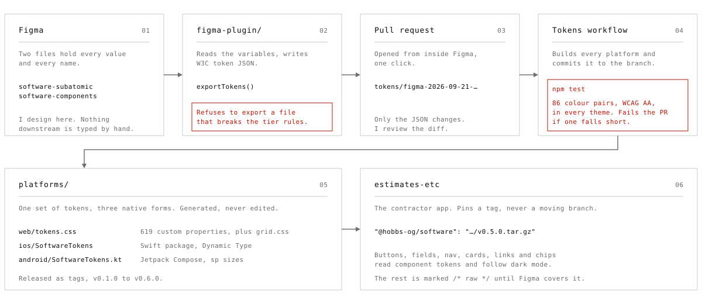
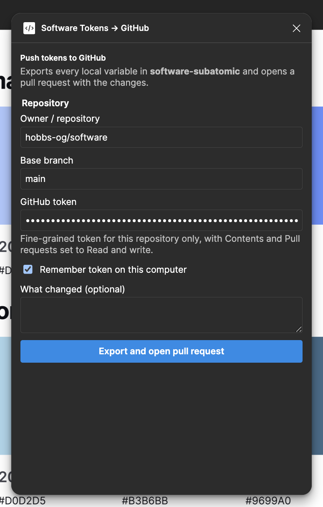
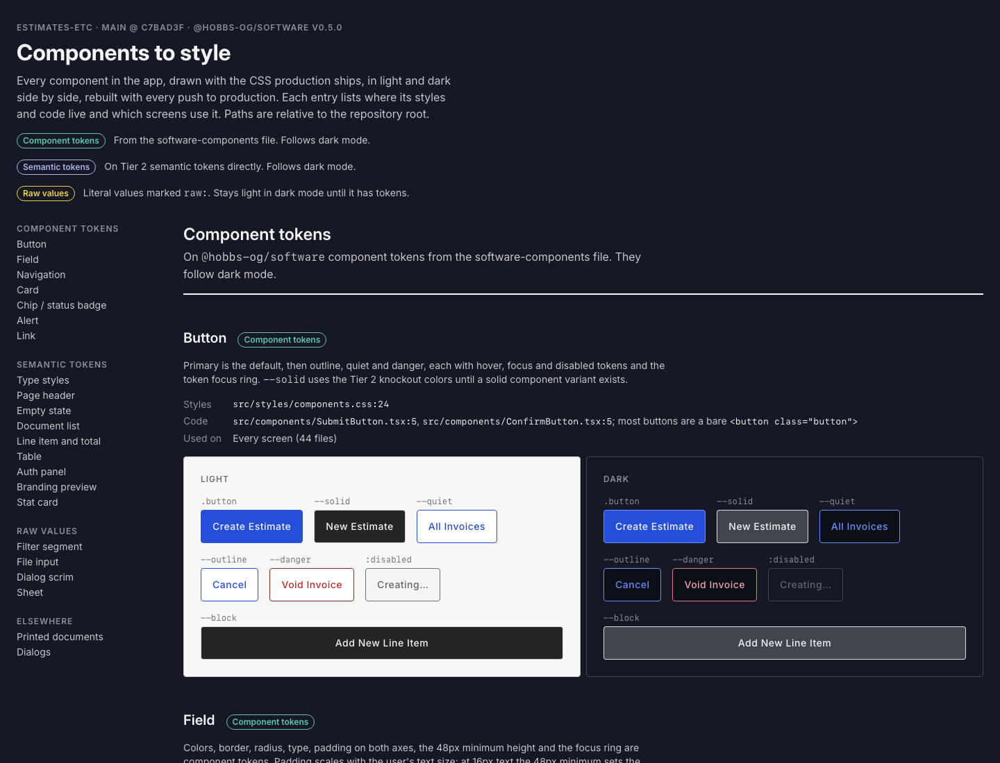
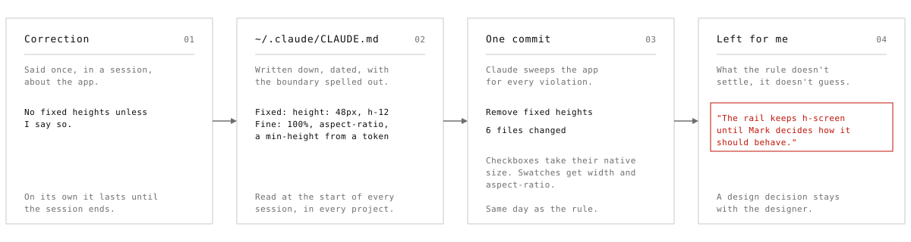

hobbs.design · Designing with AI
I wasn't an early adopter, but now I'm an evangelist.
Claude writes the code and I make design decisions. Since August I've built two things that way. One is a design system that Figma controls, built for web, iOS and Android. The other is a contractor app running on it in production.
AI will fill any gap you leave, and it'll look right doing it.
Ask for a gap between two icons and you'll get
one. If the token doesn't exist, Claude writes the token name
anyway and tucks a fallback value behind it, and the fallback
is what ships. The contractor app had three of them.
var(--space-3xs, 0.25rem) points at a token my
system never had, so each one rendered a 4px gap on a grid that
doesn't allow 4px.
Nothing looked broken, which is what worried me. A value I didn't choose looks exactly like one I did, and it gets through review because it's wearing a token's name. Give it enough sessions and a codebase fills up with decisions nobody made.
So I set the work up around where Claude gets to decide and where it has to stop and ask.
Speed was never the problem. Claude can write a build script, a Swift package or a PDF renderer faster than I can read one. What it can't know is which of two reasonable values I meant. It also won't tell you when it's guessing.
I didn't fix that with better prompts. Values come from one place Claude can't write to. The rules live in files it reads at the start of every session. And when either one gets ignored, a check fails.
Figma decides every value, and the repo just keeps the record.
Two Figma files hold every token in the system. One has the primitives, semantic colour and type, and the grid. The other has the component tokens. Nobody edits the token or platform files by hand. Not me, and not Claude.
Figma's Variables REST API is Enterprise-only and I'm on Pro, so Claude and I built a plugin to bridge the gap. It reads the variables, writes standard token JSON and opens a pull request right from Figma. A GitHub workflow takes it from there. It builds the web, iOS and Android files, commits them to the branch and runs the accessibility checks.

Claude can build the pipeline, but it can't put a value into it.
The repo has its own CLAUDE.md, the
file Claude reads before it touches anything. It says the two Figma
files are the source of truth and that Claude never invents a value
to fill a gap. If a component needs a colour with no semantic token,
that token gets made in Figma first, with a light and a dark
value.
The build enforces that too, so it doesn't depend on Claude remembering. From September 17 to 26, nineteen pull requests came out of Figma this way. Each one only changed token JSON, and each one got rebuilt and checked before I merged it.

The plugin says no
If a variable points into another library, a name is both a token and a group, or a component collection has more than one mode, the export stops and tells you why.
A contrast failure fails the build
86 colour pairs get measured against WCAG 2.1 AA in every theme. If one fails, the repo treats it as my design call. Claude doesn't get to nudge a token until it passes.
Dark mode can't be skipped
A component colour pointing straight at a primitive looks fine in light mode and wrong in dark. The check fails until it points at a semantic token.
Every platform gets its own units
Rem on the web, sp on Android, Dynamic Type on iOS, so text size follows the reader's settings everywhere. The apps use the system font. Only the web loads Inter.
The contractor app is where the system has to hold up.
estimates-etc is built for independent contractors. Every job starts with a client, and the client's address is the job site. From there it's an estimate, change orders the client signs off on, an invoice that picks up the approved changes, and payment. It runs in production, and its PDFs are laid out to match a working contractor's real invoices.
It pins a tagged release of the system, v0.5.0 right now, never a moving branch. Buttons, fields, navigation, cards, links and status chips all read their component tokens, so they follow dark mode and get their focus rings straight from Figma. Everything at page level uses semantic tokens.

Whatever the system doesn't cover yet gets labelled in the code instead of quietly filled in.
Four components don't have tokens in Figma yet:
the filter segment, the file input, the dialog scrim and the sheet.
Where they need a value, it's marked
/* raw: <component> */. There are 39 of those
today.
Anyone can search for them, and together they're the to-do list for
the components file.
The product rules are written down the same way.
Client first. An invoice built from an estimate is locked, so to fix
one you void it and reissue it. Change order numbers build on the
estimate's number. The app's CLAUDE.md records each one
as my decision, so a later session can't "simplify" it away.
If a correction isn't written down, it's gone by tomorrow.
Claude starts every session with no memory of the last one. Anything I say once disappears unless it lands in a file. I keep those files at three levels. A global one covers how I work on every project. Each repo has its own for that repo's rules. And commit messages record why each change happened, right where it happened.
Once a correction applies everywhere, it goes in the global file. Prefer plain CSS. No inline styles, ever. No fixed heights. Measure a craft choice before you defend it. Every one of those started as something I'd had to say more than once.

A good rule is as clear about where to stop as it is about what to do.
"No fixed heights" on its own would have led to a sweep that broke things. The written rule draws the line. An absolute length is fixed. A percentage, a viewport unit, an aspect ratio or a minimum height from a token isn't. That's why Claude could fix six files in one commit.
It's also why the sweep stopped where it did. The sidebar rail kept its full-screen height, and the commit says it stays that way until I decide how the rail should behave. That's the right call. How the rail behaves is a design question, and the rule doesn't answer it.
I work numbers out instead of picking them, so Claude never has to guess one.
The app shrinks a long estimate to fit the page. The limit on that was a hand-picked 0.55. The smallest text on the sheet is an 8pt table header, so an overlong estimate printed that header at 4.4pt. Fine print on a contract, and unreadable for the person signing it.
Now the limit comes from a legibility rule. Divide 6pt by the smallest size on the page and you get 0.75. Past that, the document runs onto a second page. A normal estimate still prints full size on one page. The long test document stops at 0.75 and runs three pages, and its smallest text is exactly 6pt.
A formula carries into the next session, and a hand-picked number doesn't.
That formula lives in my global instructions now, with the rest of my print rules. Measure the paper. Keep margins in one place. Load the fonts before the snapshot. Tag the PDF for screen readers on purpose instead of trusting a library default.
Fonts got the same treatment. Before deciding whether to load Inter from Google's CDN, we measured it. One 73KB variable file covers every weight for Latin. The CDN adds two extra connections and a render-blocking stylesheet, and browsers don't share that cache between sites anymore. So the system hosts its own files.
When something broke, the fix was a better check.
Emailing an estimate failed in production, and the config check kept saying everything was fine. The problem was a fallback. When the sender address was missing, the code swapped in a default that happened to be a real address, so the check passed on the default. Claude read that pass as proof its fix had worked, when it hadn't.
Two other failures looked just like it. A stale container passed for the current release twice. And six rounds of deploy instructions said "your app service" without ever naming the project, on a host that makes up its own project names.
If a check passes the same way whether things work or not, it isn't checking anything.
Every fix made the system tell the truth, instead
of asking Claude to be more careful. The production fallback is
gone. The app now reports the commit that's actually live, and we
read that instead of assuming. Its CLAUDE.md names the
host's project, service and environment every time.
The design system had one of these too. I added a second type mode in Figma, the build merged it over the first, and the web output shipped the wrong fonts as the default. Now modes work like brands, where each one only overrides what's different. The repo's instructions warn against merging them again.
What working this way got me.
One token source now builds three platforms. The contractor app got to production in 60 commits since August 21, and every one is co-authored with Claude, right there in the history. The system's rules are public in its repo.
The bigger win is a way of working I can take to the next product.
Changing a value means editing Figma
Change the variable, open the pull request from the plugin, read the diff, merge. The web, Swift and Compose files follow, and nobody types a value.
Rules outlast the session
Every standing correction lives in a file Claude reads before it starts. A new session in a new repo starts with the same rules as the last one.
Gaps are out in the open
Anything the system doesn't cover yet is marked raw in the product and counted, so my next round of Figma work is already listed.
Every decision has an owner
The instructions separate what Claude can fix from what it has to ask me about. Contrast failures, grid remaps and layout behaviour all come back to me.
What's still open.
Both projects are young and some of this is unfinished. I'd rather list it than pretend it's done.
39 raw values to retire
Each one goes away when its component gets tokens in Figma. None of them get fixed by slapping a token name on them in code.
Payment confirmation is next
Recording a payment and emailing a receipt is the last step in the job flow. Removing a payment doesn't update the invoice's status yet.
The foldable grid needs checking
The iOS grid values for iPhone Duo assume a display scale Apple hasn't published. They need a check in the Simulator before anyone relies on them.
Claude made the build fast, and keeping the decisions mine is what made it good.
Anyone with an AI tool can turn out a lot of code quickly. What carries over to a team is the setup around it. Values come from one place AI can't write to, and the rules and checks make it stop and ask before it decides anything. That's what this page is about, and the commit history in both repos backs it up.